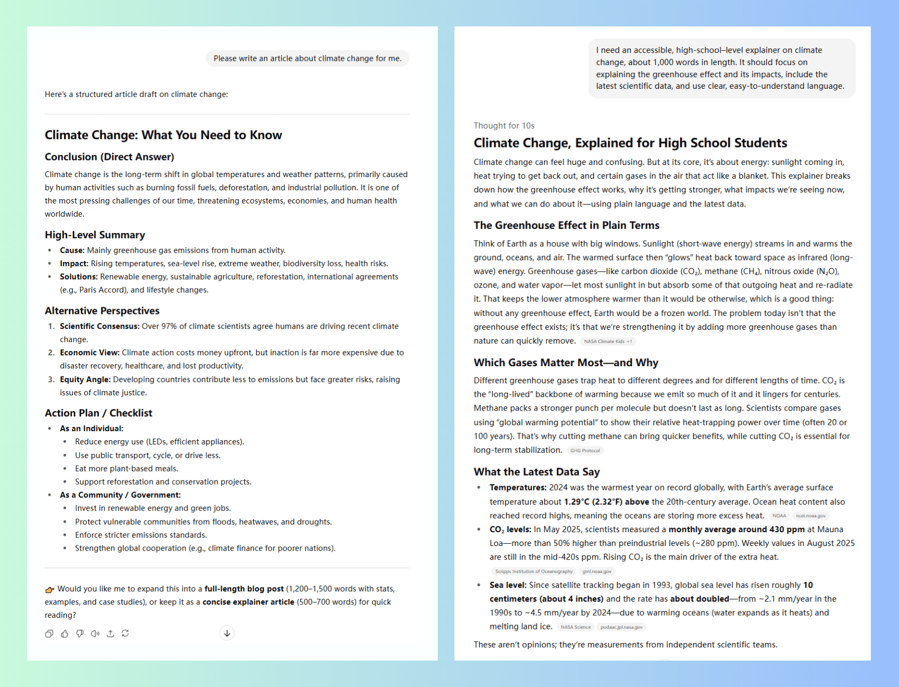
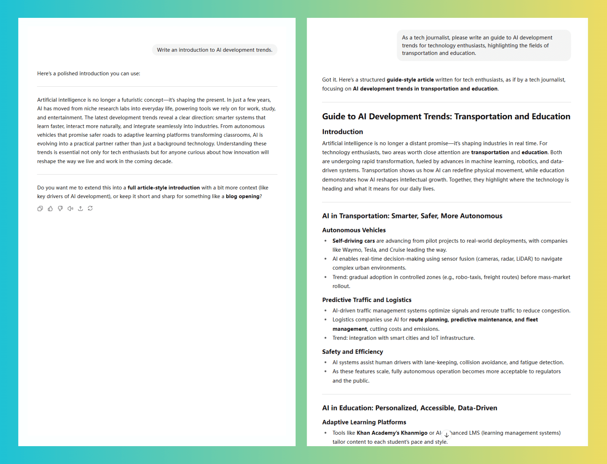
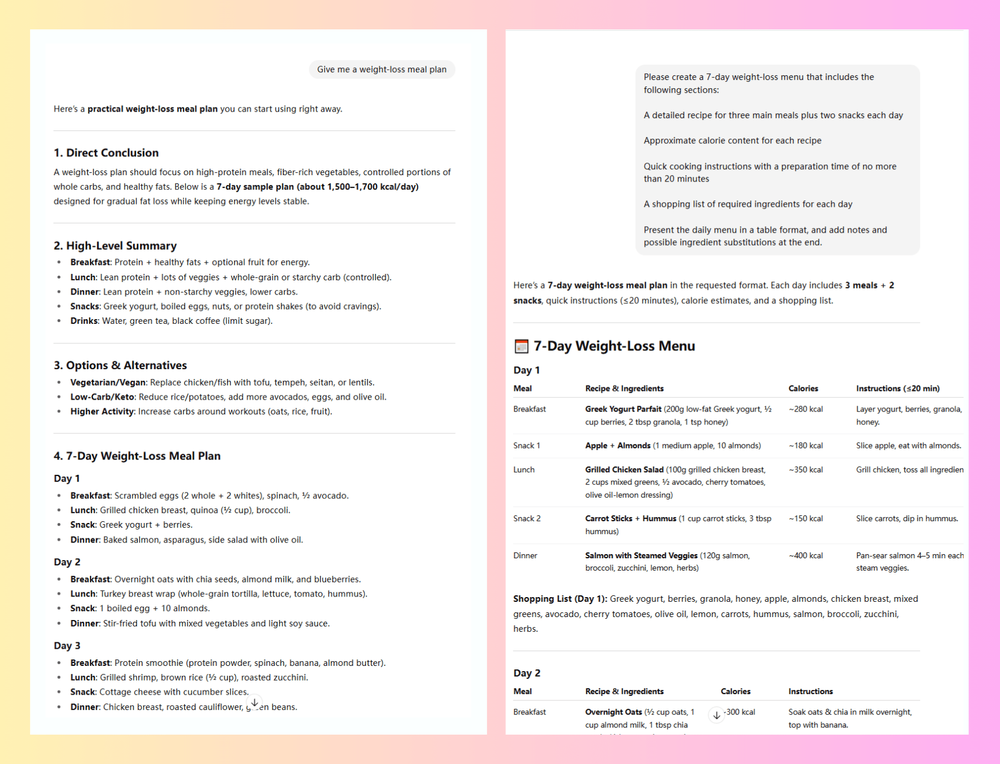
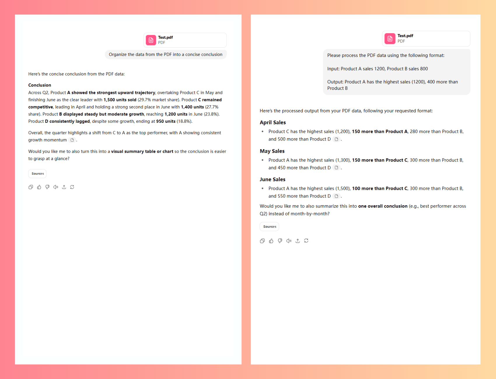
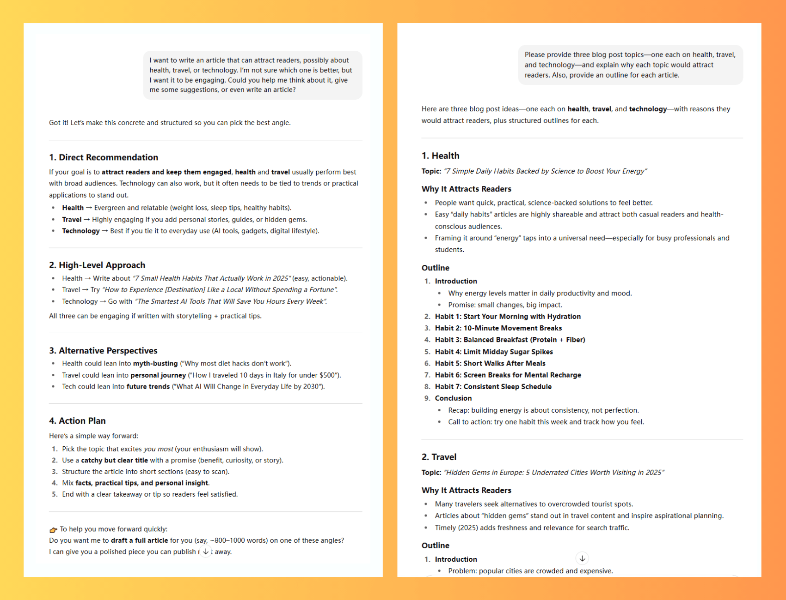
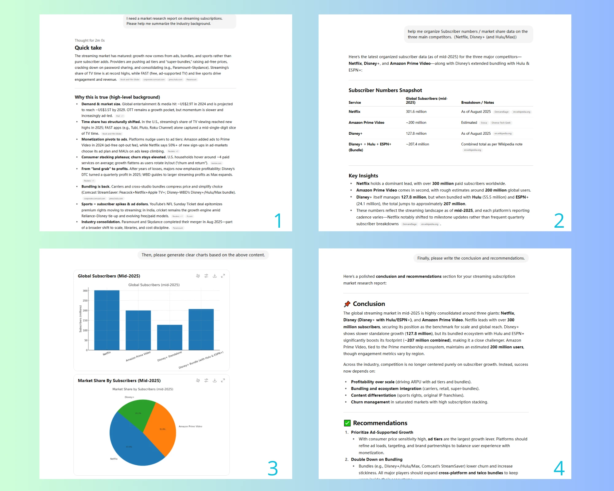

如何編寫 ChatGPT 提示：2025 終極指南
隨著人工智能的快速發展，ChatGPT 已廣泛應用於寫作、研究、數據分析等諸多工作學習場景。然而，實際使用中，用戶體驗卻存在很大差異：面對同樣的問題，有的人得到的只是模糊、公式化的回答，而有的人卻能獲得深刻的專業見解。
這種差異的根源在於 ChatGPT 的核心特質之一： 其輸出的質量取決於輸入的清晰度 。模糊的問題只能產生膚淺的答案，而清晰具體的提示則引導模型提供真正有價值的內容。
換句話說，限制不在於工具本身，而在於 用戶編寫提示的能力 。本文將提供結構化的 ChatGPT 提示指南，從基礎知識入手，逐步深入高級技巧，幫助你始終如一地獲得高質量的結果。
如何編寫更好的 ChatGPT 提示
在本節中，我們將研究如何創建基本的 ChatGPT 提示，以幫助你快速生成準確且相關的輸出。
1. 明確定義任務目標和背景
有效的 ChatGPT 提示總是始於清晰的目標。模糊的指示會導致寬泛、缺乏重點的回應，往往無法滿足實際需求。相反，當任務信息具體且定義明確時，模型可以生成真正符合你需求的內容。
以下是比较：
基本提示 ：
寫一篇有關氣候變化的文章。
更好的提示 ：
我需要一篇1000字的面向高中生的關於氣候變化的科普文章。文章應重點關注溫室效應及其影響，包含最新的科學數據，並以清晰易懂的語言撰寫。
在更好的例子中，我們明確定義：
- 目標受眾：高中生
- 內容類型：科學講解
- 篇幅要求：1000字
- 重點關注：溫室效應及其影響
- 語言風格：清晰易懂
這種清晰的程度確保了輸出結果不僅更具相關性，而且更實用、更有針對性。下圖展示了兩種提示生成結果的比較，差異一目了然。
2. 為 ChatGPT 分配角色
正如演員需要劇本和角色一樣，人工智能也需要" 身份標籤 "才能採取正確的表達方式。
根據你的需求，你可以讓 ChatGPT 扮演經驗豐富的營銷總監、產品經理、科學家或教育工作者。角色的針對性和專業性直接影響輸出的相關性和深度。
基本提示 ：
寫一篇關於AI發展趨勢的介紹。
更好的提示 ：
作為一名科技記者，請為科技愛好者撰寫一篇關於人工智能發展趨勢的介紹，重點介紹交通和教育領域。
從結果來看，很明顯，一個簡單的"寫介紹"請求只會產生一個廣泛而通用的回應，但分配"科技記者"的角色促使 ChatGPT 提供更專業的觀點。
如果想要內容更深入，還可以為角色添加 "屬性" 。這樣，ChatGPT 就不僅僅承擔起一個身份，還能採用更具體的寫作習慣或偏好。
基本提示 ：
撰寫一份關於 GPT-5 的報告。
更好的提示 ：
作為一名重視數據和事實核查的科技記者，請撰寫一份關於 GPT-5 的報告，其中引用至少一組權威數據並將其與 GPT-4o 進行比較。
通過添加"重視數據和事實核查"屬性，ChatGPT 避免了模糊的描述，而是提供了更有說服力的細節和證據。
3. 指定輸出要求
如果你是一名建築師，你不會簡單地告訴建築工人"建造一座漂亮的房子"——你會為他們提供詳細的藍圖。
同樣，指定 輸出格式 和 結構 有助於 ChatGPT 生成更清晰、更有條理、更易於使用的內容。
例如，如果你希望 ChatGPT 創建結構化的減肥膳食計劃，你的提示不僅應提及基本格式（例如使用表格），還應明確長度、重點關注領域和其他具體要求。
模糊提示 ：
給我一份減肥膳食計劃。
清除提示 ：
請制定一個為期 7 天的減肥膳食計劃，其中包括：
- 每日三餐和兩次零食的詳細食譜
- 每個食譜的大致卡路里含量
- 準備時間不到 20 分鐘的快速烹飪指南
- 每日所需食材的購物清單
以表格形式呈現每日菜單，並在末尾添加註釋，說明可能的成分替換和重要提醒。
輸出的差異是顯而易見的：只有明確定義格式和要求，結果才會結構良好、實用且符合你的需求。
4.提供輸出示例
當你希望 AI 生成 特定風格或格式 的內容時，給出示例是最直接有效的方法。這能讓 ChatGPT 快速掌握你的期望，並在示例的基礎上進行創新。例如：
為新用戶撰寫歡迎郵件。請遵循以下語氣和結構："你好，歡迎加入！為了幫助你快速上手，我們準備了三個步驟：
- 下載應用程序；
- 設置你的個人資料；
- 嘗試你的第一個任務。"
通過此模板，所需的語氣和結構就變得清晰了。
反面例子也可能有幫助 ，因為它們明確地告訴人工智能應該避免什麼，這有助於防止不令人滿意的輸出：
撰寫一篇社交媒體推廣帖子。請避免以下風格： "我們的產品非常出色，無與倫比，將以前所未有的方式徹底改變世界……"
通過設置這些"紅線"，ChatGPT 將自動避開誇張的營銷語言。
在數據處理場景中 ，示例的作用甚至更大。例如，在上傳 PDF 報告時，你可以首先展示預期的輸入輸出關係，以便 ChatGPT 快速了解你的需求：
基本提示 ：
將 PDF 中的數據總結為簡潔的結論。
更好的提示 ：
請按照以下格式處理 PDF 中的數據：
- 輸入： 產品 A 銷量 1200，產品 B 銷量 800
- 輸出： 產品 A 的銷量最高（1200），比產品 B 多 400
如下圖所示，清晰的提示結合示例，使ChatGPT能夠快速掌握處理邏輯，並準確地將模式應用於數據處理任務。
对于复杂的内容创建任务，你甚至可以提供喜欢和不喜欢的风格的多个示例，以帮助 AI 更准确地了解你的偏好。
5.避免歧義和冗餘
"少即是多"。這條經典的設計原則也適用於編寫 ChatGPT 提示。清晰簡潔的指令通常比過於複雜的指令更有效。
"好"、"高質量"或"優化"等詞語對不同的人有不同的含義。更好的方法是用 具體的標準 來代替它們，例如"有研究支持"或"使用行業特定術語編寫"。
避免相互矛盾的要求 也很重要——要求"全面詳細"同時又"簡潔明了"會讓 ChatGPT 難以確定優先級。
冗長而模糊的提示 ：
我想寫一些吸引讀者的內容。也許是關於健康、旅行或科技的內容——我不確定哪個更好。但我希望它引人入勝。你能給我一些想法，或者直接幫我寫一篇文章嗎？
簡潔明了的提示 ：
請提供三個博客文章主題——健康、旅行和科技。解釋每個主題吸引讀者的原因，並附上每篇文章的提綱。
如何提高 ChatGPT 提示的有效性
在本節中，我們將探索一些高級技術來優化你的提示並提高 ChatGPT 輸出的質量、創造力和精確度。
1. 使用自定義指令
ChatGPT 的自定義指令功能就像是為 AI 提供持久的"個性化配置"。點擊右下角的個人資料圖標，打開"自定義 ChatGPT"設置頁面，即可設置 ChatGPT 會記住的首選項。以下是 OpenAI 官方視頻，詳細演示了此功能。
當你有 重複性需求 或經常希望 ChatGPT 考慮特定背景信息 時，此功能會變得尤為強大。例如，如果你是一位博主，你可以設置諸如"我的寫作風格應該自然平易近人，避免使用過於專業的語言"之類的指令。這樣，生成的文章將更好地符合你的個人風格。
對於團隊協作或長期項目，你甚至可以針對不同的角色或項目階段 創建不同的自定義指令集 。通過在它們之間切換，你將獲得最適合當前需求的輸出。
2. 請求多角度輸出
如果你想要更廣泛的見解或更多的創造性選擇，你可以明確要求 ChatGPT 從不同的角度或立場做出回應。
例如，在計劃旅行時，你可以說：
"請從經濟實惠、攝影為主、親子共遊三個角度推薦首爾三日遊行程。"
通過將這些選項並排放置，你可以快速找到最適合你需求的組合。
同樣的方法在寫作中也很有效。假設你正在撰寫一篇關於遠程工作的文章。你可以讓人工智能從員工、經理和人力資源的角度給出意見。這樣可以使文章更加全面，避免局限於單一視角。
使用這種方法，不僅能讓你獲得更完整的信息，還能 幫助你從多個維度看待問題 ，避免認知偏差，為決策奠定更堅實的基礎。
3. 將任務分解為多個步驟
複雜的任務通常可以分解成一系列簡單的步驟。這種方法不僅可以提高每個步驟的輸出質量，還能讓你靈活地調整和指導整個流程。
例如，在編寫市場研究報告時，你可以首先要求 ChatGPT 總結行業背景，然後組織競爭對手數據，接著生成圖表，最後起草結論和建議，而不是嘗試一次性創建整個報告。
通過使用這種 循序漸進的方法 ，你可以在每個階段檢查 ChatGPT 的輸出是否符合你的期望，並根據需要進行調整，而不是最終得到一個可能需要大量修改的完整計劃。
值得注意的是，這種多步驟協作 很大程度上依賴於 ChatGPT 的上下文保持能力 。如果你經常處理此類複雜項目，那麼擁有更長內存和更強邏輯一致性的 ChatGPT Plus 可以顯著提升結果。
對於預算有限的用戶，可以像我一樣，通過 環球巴士 購買 ChatGPT Plus 賬戶。價格不到官方訂閱的三分之一，但功能齊全，運行流暢可靠。
4. 使用AI提示生成器
當你有明確的目標，但不確定如何表達時，不妨先使用提示生成器，將你的想法轉化為具體的提示。利用 ChatGPT 豐富的知識和對語言模式的掌握，完善你的措辭。
例如：
初步想法 ：
我想分析客戶反饋，以確定客戶不滿意的原因以及我們是否需要迅速採取行動。
AI優化提示 ：
我需要分析客戶反饋。具體來說，我需要識別反饋中的情緒，提取主要問題，評估緊急程度，提供改進建議，並以結構化的形式呈現所有內容，包括三個部分：摘要、詳細分析和行動建議。
另一種實用技術是" 逆向工程 "：當你看到滿意的輸出時，將該示例展示給 ChatGPT 並要求它推斷產生該輸出的提示。
通過這樣做，你不僅獲得了一個現成的工具，還能學習如何構建更好的提示。這本質上是一個正反饋循環：利用人工智能來提升你與人工智能協作的能力。
5. 反饋和及時優化
當 ChatGPT 的回覆不符合你的預期時，不要簡單地重新提問或放棄。更有效的方法是 指出你不滿意的地方 並解釋你的需求："這個答案太籠統了；請用更多日常類比來解釋這個概念。"
你還可以單擊 反饋控件 （輸出下方的"豎起大拇指"或"豎起大拇指"圖標）並添加具體的改進建議。

同時，收集並記錄那些特別有效的提示模式和結構，以構建你的 個人提示庫 。你會發現不同的框架適合不同的任務，而某些措辭會持續引導人工智能進行更深入的推理。
這些積累的經驗將使你與 ChatGPT 的交互越來越高效。
最佳 ChatGPT 提示生成器
如前所述，一個好的提示生成器可以幫助你快速創建清晰具體的提示。根據我的經驗，以下工具比較突出：
- 獨立知識產權管理委員會
這是一個 瀏覽器擴展提示生成器 ，內置了龐大的模板庫。我經常用它來完成一些重複性的任務，比如撰寫產品描述或社交媒體文案。使用經過社區測試的模板可以節省大量時間，而且只需稍加調整，就能根據我的需求進行調整。
- PromptPerfect
PromptPerfect 擅長" 智能補全 "。你輸入一個簡單的請求，它就會自動填充目標、語氣和格式等關鍵細節。我尤其依賴它來完成複雜的分析任務，因為它能幫助我避免遺漏重要元素。
- FlowGPT
FlowGPT 更像是一個分享練習題的社區。你可以搜索、保存和重複使用其他人創建的練習題，查看它們在實際使用中的表現，並直接應用它們。
- PromptHero
PromptHero 最大的優勢在於 跨平台支持 。PromptHero 最大的亮點在於其跨平台支持。它不僅支持 ChatGPT，還可以為 MidJourney和其他圖像創作工具生成提示。
對於像我這樣使用多個平台的人來說，在一個地方擁有各種提示可以使管理變得更加容易，同時還可以實現跨項目的重複使用和比較。
為了更有效地管理和改進提示，我還在 ChatGPT 中測試了不同的措辭，ChatGPT 是一個結合了 ChatGPT、Claude、MidJourney 和其他主流模型的集成 AI 平台。
它提供了 多模型比較功能 ，讓你可以直接比較同一提示在不同模型中的表現，並快速找到最佳配方。
當ChatGPT 出現故障或速度變慢時，這種多平台設置特別有用，因為 ChatGPT 可以讓工作順利進行。
GPT-5 有哪些通用提示
GPT-5 發布後，許多用戶認為它的答案並不完全符合預期。為了充分發揮它的潛力，我結合了之前介紹的提示構建方法，並在 ChatGPT 中不斷測試和完善。在此過程中，我開發了一套適用於常見場景的通用提示模板。
這些模板已涵蓋目標設定 、 角色分配 和 產出指南 等基本要素。你可以直接應用它們，也可以根據需要靈活調整。
與工作相關的場景
撰寫求職信/簡歷優化提示 ：
你是一位資深HR專家，請幫我優化這份簡歷，要求如下：
- 將其調整至目標位置 [插入位置]。
- 突出與職位相匹配的核心技能和經驗。
- 用具體的數據和成果來支持描述。
- 保持在 1-2 頁以內，格式簡潔、專業。
- 避免使用"負責"或"參與"等模糊動詞。
我的簡歷：[粘貼內容]
目標職位：[公司+職位]
面試準備提示 ：
你是一位經驗豐富的面試官。請幫我準備[插入職位]的面試。
我需要：
- 根據職位描述提出的 10 個常見面試問題。
- STAR 框架針對每個問題的回答建議。
- 根據我的背景，我可以向面試官提出 3 個定製問題。
- 我應該強調的關鍵優勢和能力的清單。
公司信息：[插入公司詳細信息]
我的背景：[個人簡介]
當 ChatGPT 遇到停機或性能問題時，這種多平台設置特別有用，因為 ChatGPT 可確保工作繼續進行而不會中斷。
內容創作場景
博客寫作提示 ：
你是一位專業的內容創作者。請撰寫一篇關於[主題]、針對[受眾群體]的博客文章。文章長度應為[字數]字，並以[正式/隨意/專業]的語氣撰寫。
帖子必須包含：
- 實用建議、具體示例和可操作步驟。
- 結構包含引言、3-5 個正文部分、結論和常見問題解答。
- 自然地加入這些關鍵詞以進行 SEO：[列出關鍵詞]。
社交媒體文案提示 ：
作為社交媒體營銷專家，為[平台]創建有關[產品/服務]的宣傳文案。
要求：
- 目標：提高[具體目標：點擊率/轉化率/關注者]。
- 品牌聲音：[品牌基調描述]。
- 長度：[字符/字數限制]以內。
- 文案必須突出核心價值、解決用戶痛點並包含號召性用語。
- 避免使用過度推銷的措辭或空洞的形容詞。
請提供3種不同角度的變體供我選擇。
學習場景
概念解釋提示 ：
你是一位優秀的老師。請用簡單易懂的方式解釋[概念/理論]。我的學習背景是[年齡段/知識水平]。
確保包含：
- 核心定義。
- 2-3 個類比。
- 現實世界的應用示例。
避免使用過多的專業術語和抽象的描述。最後用3個問題來測試理解。
學習計劃設計提示 ：
作為學習策略專家，請為[科目]制定學習計劃。
細節：
學習目標：[具體且可衡量的目標]。
時間限制：[總時長和每日可用時間]。
當前水平：[現有知識描述]。
輸出格式：表格形式的每週計劃，包括具體任務、突出重點難點、時間分配等。
職場溝通場景
電子郵件寫作提示 ：
請起草一封[電子郵件類型]給[收件人的角色和關係]。
- 我的目標是[你想要實現的具體結果]。
- 語氣應為[正式/友好/緊急等]。
- 結構應包括清晰的主題行、簡潔的開頭、主要內容和明確的行動號召。
- 長度保持在[字數限制]以內。
- 背景信息：[插入相關背景和細節]。
會議紀要提示 ：
請將以下會議內容整理成一份標準的會議紀要：
- 格式要求：基本會議信息、討論主題、決策、行動項目。
- 強調：關鍵決策、責任人和最後期限。
- 語言：清晰簡潔，避免冗餘。
- 按重要性對行動項目進行優先排序。
原始會議內容：[粘貼筆記或記錄]。
圖像創建場景
作為AI圖像創作專家，請為[項目名稱]設計視覺效果。
- 用例：[網站橫幅/社交媒體/印刷材料等]。
- 視覺風格：[現代簡約/復古/科技風格等]。
- 顏色偏好：[特定配色方案]。
- 核心元素：【必備的視覺元素】。
- 情感基調：[專業/俏皮/溫暖等]。
- 輸出尺寸：[具體尺寸要求]。
請針對不同的創作方向提供3個詳細的描述。
數據分析場景
作為數據分析師，請分析以下數據集並提供見解。
- 我的分析目標是：[你想要回答的具體問題]。
- 重點領域：[感興趣的關鍵數據維度]。
輸出應分為四個部分：
- 數據概述和主要發現
- 趨勢分析和異常檢測
- 可能的原因分析
- 具體改進建議
如果可視化有幫助，也請提供建議。
數據集：[粘貼數據或描述來源]。
結論
編寫高質量的 ChatGPT 提示並非一項複雜的技能，而是一項可以通過持續練習來提升的能力。首先掌握 ChatGPT 的工作原理，然後運用本文介紹的策略， 你可以顯著提高輸出的質量和可靠性 。
除此之外，使用像 ChatGPT 這樣的多模型平台可以大大提高優化效率。通過比較同一提示在不同模型上的表現，你可以快速找到最有效的措辭，並不斷完善你的提示。
隨著時間的推移，你將建立自己的 個性化提示庫 ，將 AI 變成真正可靠的助手。
關於 ChatGPT 提示的常見問題解答
ChatGPT 中的提示是什麼？
提示是你向 ChatGPT 提供的文本指令或問題。它指導 AI 如何響應。提示可以是一句話、一個問題或一段詳細的解釋。提示越清晰、越具體，輸出就越準確。
如何寫出完美的提示？
關鍵在於清晰、簡潔和具體。用自然語言表達你的請求，提供必要的背景和格式要求，並明確目標。逐步引導人工智能或以對話方式引導也能提升結果。
提示中的關鍵詞是什麼？
提示關鍵詞是通過設定上下文和方向來引導 AI 輸出的字詞或短語。例如，"總結"、"寫報告"或"面向學生"等關鍵詞有助於塑造答案，使其更符合你的期望。